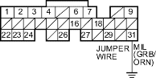
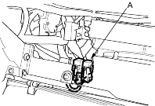
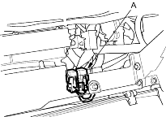

- Inspect the No. 20 IG1 (40A) fuse in the under-hood fuse/relay box.
Is the fuse OK?
YES |
- Repair open in the wire between the No. 20 IG1 (40A) fuse and the gauge assembly. If the wires are OK, test the ignition switch (see page 22-83). |
NO |
- Repair short in the wire between No. 20 IG1 (40A) fuse and the under-dash fuse/relay box. Also replace the No. 20 IG1 (40A) fuse. |

- Try to start the engine.
Does the engine start?
YES |
- Go to step 14. |
NO |
- Go to step 17. |
- Turn the ignition switch OFF.
- Connect ECM/PCM connector terminal E31 and body ground with a jumper wire.

- Turn the ignition switch ON (II).
Is the MIL on?
YES |
- Substitute a known-good ECM/PCM and recheck (see page 11-6). If symptom/indication goes away, replace the original ECM/PCM. |
NO |
- Check for an open in the wire between the ECM/PCM (E31) and the gauge assembly. Also check for a blown MIL bulb. If the wires and the bulb are OK, replace the gauge assembly. |
- Turn the ignition switch OFF.
- Inspect the No. 6 ECU (ECM/PCM) (15A) fuse in the under-hood fuse/relay box.
Is the fuse OK?
YES |
- Go to step 25. |
NO |
- Go to step 19. |
- Remove the blown No. 6 ECU (ECM/PCM) (15A) fuse in the under-dash fuse/relay box.
- Remove the PGM-FI main relay 1 (A).
LHD model:

RHD model:
